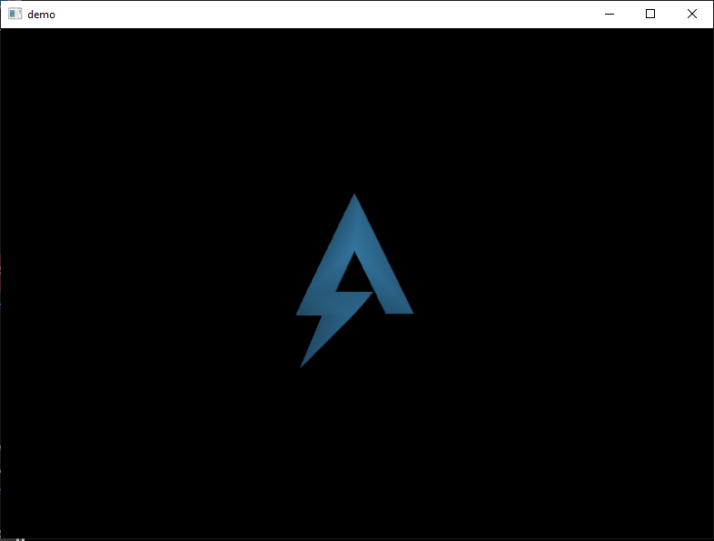
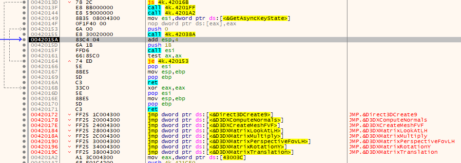
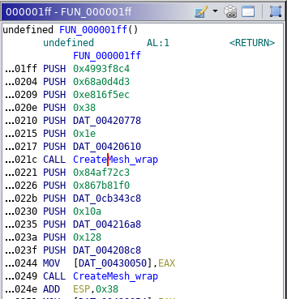
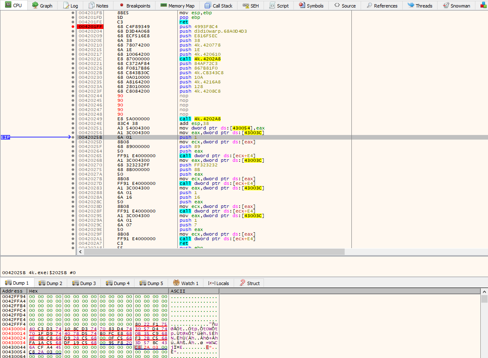
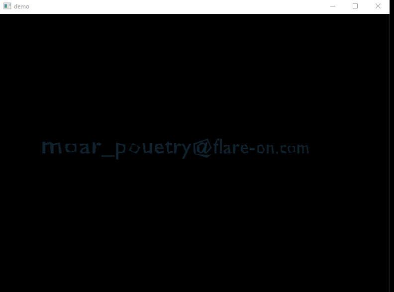

Challenge 5: "demo"
Someone on the Flare team tried to impress us with their demoscene skills. It seems blank. See if you can figure it out or maybe we will have to fire them. No pressure.
For this we just get a file "4k.exe". Running the file gives us a spinning Flare logo. (you will need dx9 in your environment to run the file).

spinning flare logo
Opening the code in our disassember, we only get a small bit of code. There has to be more code so its likely that the code we see is a small packer. To get past this, we just have to run the code in a debugger and let it unpack the rest of the code and jump to it. Then we can dump that and view it in our disassembler. In this case the "ret" at 4000d3 is where it jumps into the unpacked code.
The next hurdle, once the code is in the disassembler, is to identify what is being called in the many calls to data locations which will be holding pointers at the time of execution. The easiest way to find these is to allow the sample to run and rename the data reference in your disassembler once the pointer is populated in the debugger.

resolved methods
One function call that can be found that is usually interesting is GetAsyncKeyState. This is often used for Keyloggers. In this case crossreferencing that function leads us to a small loop with only the GetAsyncKeyState call, and 1 other function. This other function doesn't look anything like a keylogger. If you set a breakpoint on the "Call ESI" which is calling GetAsyncKeyState, you'll notice that the Flare logo moves a bit every time the loop runs. Its reasonable to assume that the loop updates the rotating image.
If you take the time to look at the call to GetAsyncKeyState, the parameter that it passes is the vKey that it is checking the state of. In this case that is 0x1B, which is the keycode for the ESC key. So that call allows the user to press ESC to exit the rotating Flare loop.
There are a lot of places where the key could be hidden. So at this point I usually just start searching through the code for possible clues, or searching for uses of other interesting API functions. One fucntion that catches my attention is the D3DXCreateMeshFVF. Without knowing much about it, this sounds like it creates the Flare image that we see. The important part about this call though, is that it is part of a function that is called twice in 4201ff.

2 calls to the function that creates a mesh
It seems odd to call this twice since we only appear to have 1 object displayed. So its worth trying to create just a single mesh, to see what both of them are.
To do this, we just have to prevent the return from the first call from being stored. Doing this will break some stuff down the line, so we can edit the hex of the location which the value would have been stored in, and place the contents of the return from the second call in that location. Thus the result is the same as if we had ran the call to create the second mesh twice.

preventing the first mesh from being created
This ends up giving us our answer! The first mesh that was created was the Flare logo, and the second was the flag that we were seeking.

The flag!
Answer: moar_pouetry@flare-on.com